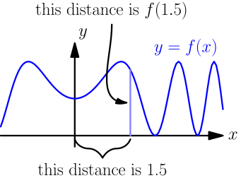
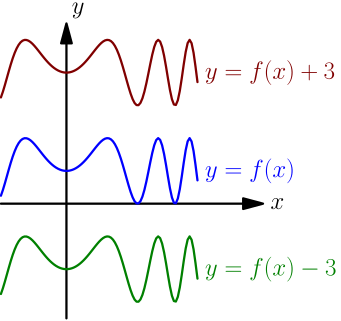
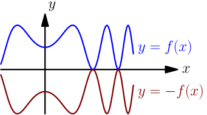
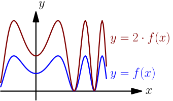
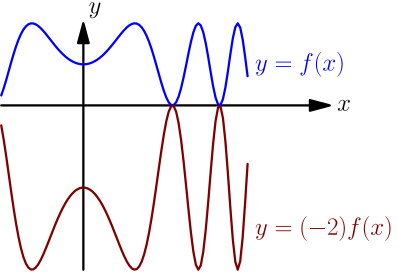
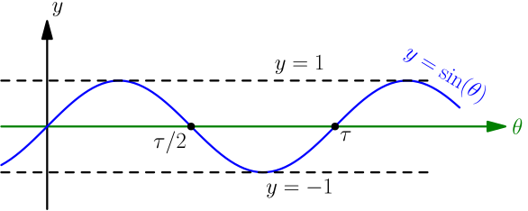
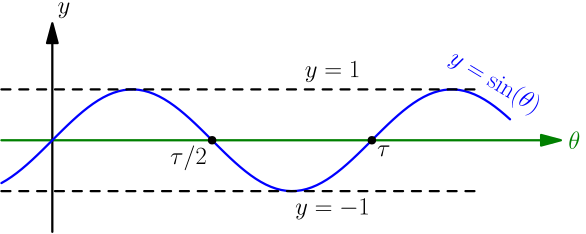
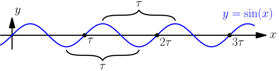
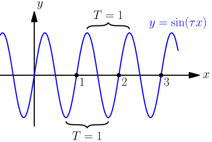

Graphs¶
This page contains a bunch of graphs and some awesome graph drawing demos made by a friend of mine.
Basic Stuff¶
Let's say that $f$ is a function and we have a graph $y=f(x)$. It means that we can get a $y$ value by plugging the corresponding $x$ value to $f$. For example, at $x=1.5$, the $y$ value is $f(1.5)$.

There are a few common ways to stretch and move graphs:
- Adding a positive constant moves the graph up simply because $y$ values are always bigger by that constant. Substracting a positive constant brings the graph down. That's same as adding a negative constant, e.g. $f(x)-3 = f(x)+(-3)$.

- Substracting a positive constant inside $f(\quad)$ moves the graph right. Adding a positive constant moves left.
Think about it like this: if we have $f(x-2)$ instead of $f(x)$, then $x$ needs to be bigger for getting the same $y$ value, and bigger $x$ means right. For example, $f(3) = f(5-2)$, so whatever was at $x=3$ moves to $x=5$.
- Adding a minus sign to front flips the graph to the other side of the $x$ axis.

- Multiplying by a positive constant stretches the graph away from the $x$ axis. The $y$ values represent distances from the $x$ axis, so e.g. multiplying by 2 means that the distances are always twice as big. That looks like stretching.

- Multiplying by a negative constant is just a combination of the above two things because $(-2)\cdot f(x)=-(2\cdot f(x))$.

Lines¶
The equation of any (non-vertical) line is $y=sx+c$, where $s$ and $c$ are constants. The $s$ is known as the slope and $c$ is the constant term. Try at least these things with the below demo program:
- What does changing the slope and the constant term do?
- What if the slope or the constant term is zero?
- What if the slope or the constant term is negative?
See Also
The derivative tutorial contains more information about slopes.
Parabolas¶
The "tip" of a parabola is known as the vertex. See the image at right.
The graph $y=x^2$ is a simple parabola, and the below demo displays that by default. As you can see, the vertex $x$ and $y$ coordinates are both 0. Parabolas of the form $y=(x-x_v)^2+y_v$ are the same thing shifted, and the $x_v$ and $y_v$ constants represent new $x$ and $y$ coordinates of the vertex.
Putting a constant $a$ to front like $y=a\cdot(x-x_v)^2+y_v$ makes the parabola stretch, and a negative $a$ means that it opens down. Note that $a \ne 0$ because $a=0$ would mean $y=y_v$, and that's a horizontal line at height $y_v$ instead of a parabola.
Handy thing: $(a-b)^2=a^2-2ab+b^2$
Proof using $(a-b)c=ac-bc$:
$$\begin{align}& \ (a-b)^2 \\ =&\ (a-b)(a-b) \\ =&\ a(a-b)-b(a-b) \\ =&\ (aa-ab)-(ba-bb) \\ =&\ aa-ab-ab+bb \\ =&\ aa-(ab+ab)+bb \\ =&\ a^2-2ab+b^2\end{align}$$In this case we need to plug in $a=x$ and $b=x_v$.
The $y=a(x-x_v)^2+y_v$ form is nice because it's easy to see where the vertex is and it's easy to solve things like $y=0$, but let's see what happens if we expand that:
$$\begin{align}y &= a\cdot(x-x_v)^2+y_v \\ &= a\cdot(x^2-2x_vx+{x_v}^2)+y_v \\ &= ax^2-2ax_vx+a{x_v}^2+y_v\end{align}$$Now if we set $b=-2ax_v$ and $c=a{x_v}^2+y_v$, then $b$ and $c$ are also constants because they don't depend on the value of $x$. We get this:
$$\begin{align}y = ax^2+bx+c\end{align}$$This form comes up often when calculating stuff, and converting from this form back to $y=a(x-x_v)^2+y_v$ can be useful. That is known as completing the square. This exercise gives you everything you need to know for doing that:
Exercise
Above we set $b=-2ax_v$ and $c=a{x_v}^2+y_v$. If we know $a$, $b$ and $c$, how can we figure out $x_v$ and $y_v$?
Check your $x_v$ answer with a derivative like $\frac{d}{dx}(ax^2+bx+c)=0$, and check your $y_v$ answer by plugging in $x=x_v$ to $y=ax^2+bx+c$.
Next, plug in your answers to this:
$$\begin{align}ax^2+bx+c = a(x-x_v)^2+y_v\end{align}$$You should get the same square-completing formula as the one on the summary page.
Exponents and Logarithms¶
There's a detailed introduction to exponents and logarithms here. In short, $\log_b(x)$ is the inverse of $b^x$:
$$\begin{align}\log_b(b^x) &= x \\ b^{\log_b(x)} &= x\end{align}$$Try at least these things with the below demos:
- What happens if you make the base bigger?
- What if the base is 1, 0 or negative?
- What if the base is e.g. 0.5? (The demos let you type in 0.5 for the base even though you can't select it with the arrow buttons.)
You're probably wondering why the base of a logarithm cannot be 1, 0 or negative. You'll see why if you draw the graph of $y=1^x$. If a logarithm with base 1 exists, then by definition, $y=1^x$ is same as $x=\log_1(y)$. But $x$ gets every possible value when $y=1$ and no values at all otherwise because $y=1^x$ is a horizontal line at height 1. A function like that doesn't really make much sense.
Sine Waves¶
This section assumes that you know how sine and cosine are defined in a unit circle. I have explained it in this chapter.
Here's a unit circle and a simple sine graph:
 

If you don't understand something about these things (e.g. what is $\sin(\theta)$, what is $\tau$, how do these graphs relate to each other, why does the blue graph look like a wave), please check those things from this chapter before you continue. The graph of cosine is a lot like the sine graph above, but we'll focus on the sine wave for now.
First, let's notice that the sine wave repeats itself with intervals of $\tau$:

This makes sense because if we rotate a full turn on the unit circle we get right back to where we started, and sine gets the same value. The repeating interval is known as the period $T$.
$$\begin{align}\sin(x+\tau) = \sin(x)\end{align}$$If we graph $y=\sin(\tau x)$ instead of $y=\sin(x)$, we get a period of $1$ instead of $\tau$. Think about it like this: if $x$ changes by 1, then $\tau x$ changes by $\tau$ and $\sin(\tau x)$ repeats.
$$\begin{align}\sin(\tau(x+1)) = \sin(\tau x + \tau) = \sin(\tau x)\end{align}$$
In general, if we graph $y=\sin(\frac{\tau x}{T})$ we get a period $T$:
$$\begin{align}\sin\biggl(\frac{\tau(x+T)}{T}\biggr) &= \sin\biggl(\frac \tau T (x+T)\biggr) = \sin\biggl(\frac \tau T x + \frac{\tau}{\rcancel T}\rcancel T\biggr) \\ &= \sin\biggl(\frac{\tau x}{T} + \tau\biggr) = \sin\Bigl(\frac{\tau x}{T}\Bigr)\end{align}$$This fun demo lets you play with $y=A\sin(\frac{\tau x}{T})$ graphs. The amplitude $A$ is just stretching the graph away from the $x$ axis.
The demo lets you make $A$ and $f$ negative, but as you can see, that just flips the graph around and it still looks very similar; this is why $A$ and $f$ are usually chosen to be positive.